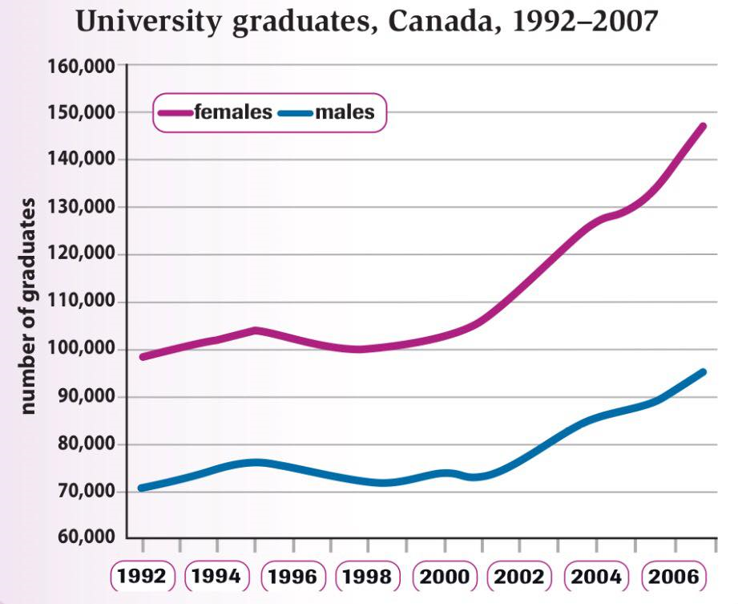

You should spend about 20 minutes on this task.
The graph below shows the number of university graduates in Canada from 1992 to 2007.
Summarise the information by selecting and reporting the main features and make comparisons where relevant.
Write at least 150 words.

Graduate numbers rose during the 15 years and reached their highest levels in 2007, but there were always more female than male graduates. In 1992, the difference was less marked, with just over 70,000 males and about 100,000 females. However, by 2007 there had been more significant growth in female numbers. That year, they rose to 147,000, compared to just 95,000 males. Thus the gap between the number of male and female graduates had widened.
A more detailed look at the graph reveals that the overall growth in numbers was not always steady. Between 1992 and 1995, there was a slight increase. That was followed by a period of about five years, when numbers fell, then flattened out at just over 70,000 for men and 100,000 for women. After 2000, however, graduate numbers saw their strongest growth rate, and this was well above the increases that had been seen in the early 1990s.
Clearly, there were similar trends for male and female graduates over this period, but the number of women graduating increased at a higher rate than the number of men.
You should spend about 40 minutes on this task.
Write about the following topic.
Some organisations believe that their employees should dress smartly. Others value quality of work above appearance.
Discuss both these views and give your own opinion.
Give reasons for your answer and include any relevant examples from your own knowledge or experience.
Write at least 250 words.
Style of dress in work place is a very important for many organization. They encourage their employees to wear casual clothes or even designer clothes to look more smart and beauty, while others prefer to improve the performance of their employees. The latter believe that the quality of working is more valuable. So, which one is more important?
Many of famous organizations assign a remarkable budget to the clothes and uniforms of their members. According to their annual estimate indices, their success directly is in relation with members appearance. Moreover, those indices show that people have tendency more to that organization have attraction in the appearance. It seems that smart dresses and good looking in work place not only increase the success, but also they make there more beautiful and it may lead to better performance of the members.
On the other hand, other organizations value the efficiency of their employees, more. In their belief, the performance of each one is in prior of their looking. For example, employees in many companies wear a very simple uniform, however the mentioned companies program many professional courses to enhance the employees ability.
Personally, I believe the question depends on the organization activities. I mean the ones are directly working with people, like shopping centers and department stores, hospitals, and so on, value the appearance more. People expect the beauty and they have to answer to this request in the best manner. In contrast with this the organizations, which work with people indirectly, tend to focus on the performance. Employees of companies, workshops and so on have to improve their ability, not to dress smartly.